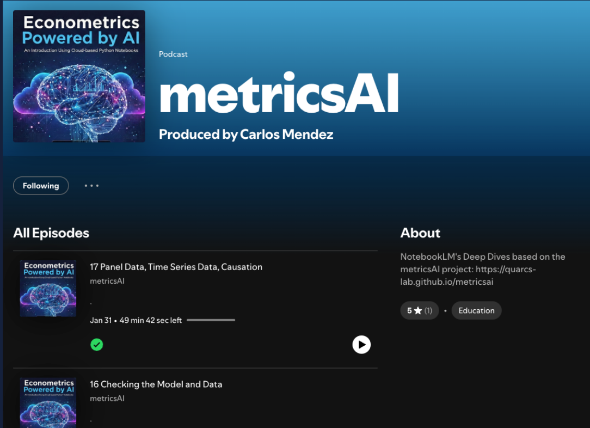
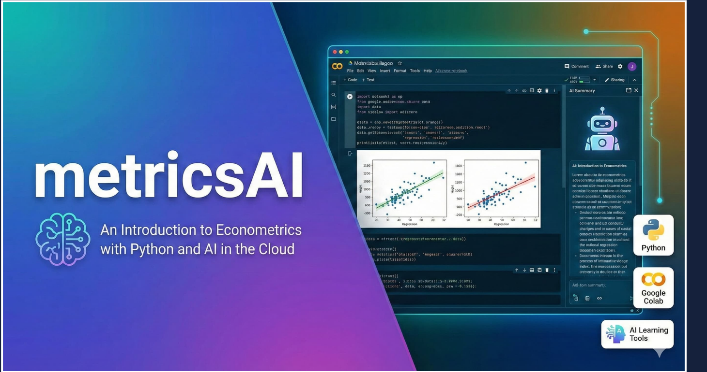
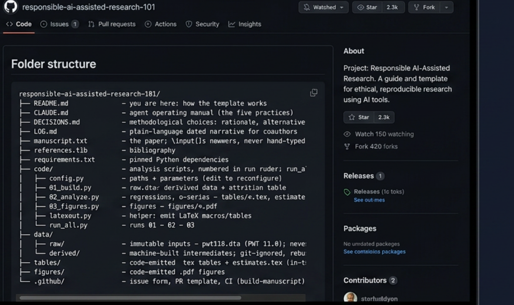
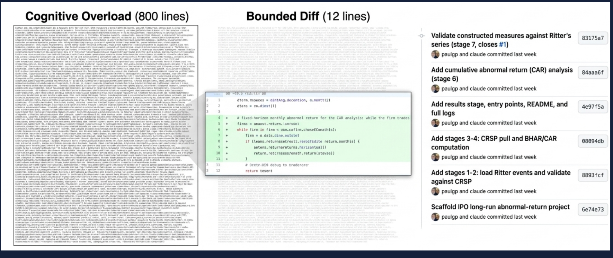

Costly all aroundslow to make and
hard to check
Producing with AI, verifying with discipline
Nagoya University (GSID)
July 21, 2026
The problem
AI writes the essay, the code, and the chart in seconds — for almost nothing.
But can we trust what it produced?
AI slashes production cost — but not verification cost — so work migrates into the danger zone.
When we can’t check the output, we’re trusting a black box.
The fix isn’t to avoid AI. It’s to design a workflow that separates production from verification.
Tool 1
You give it your notes, PDFs, slides, and data. It answers only from those sources.
Grounded in your materials → far less hallucination, and every answer is traceable.
🎙 Podcast 🎬 Video overview 📝 Summary ❓ Quiz 💬 Grounded chat
One upload becomes many ways to learn — the AI podcasts and AI tutors behind metricsAI work exactly this way.

Every chapter of the metricsAI project becomes an AI-generated audio discussion — published as a podcast on Spotify.
Tool 2
Start on your laptop at a café; the lab is the same everywhere.

Every chapter ships as a Google Colab notebook — code, output plots, and an AI assistant beside it.
Course: quarcs-lab.github.io/metricsai · Example: Chapter 1 in Colab
Connect Google Earth Engine and query satellite data straight from a notebook:
Big geospatial data, no supercomputer — just a notebook and credentials.
One question ties the pipeline together:
Can satellite data predict local economic development across Bolivia’s 339 municipalities?
Lights capture activity at night; embeddings capture the built environment by day.
The notebook answered the question. Now make the work reproducible and reviewable.
A promising exploration → a project anyone can re-run and audit → GitHub.
Tool 3
Collaborate with AI agents the way you would with a careful coauthor — in the open.
Claude Code + GitHub + Overleaf: code, results, and manuscript, all version-controlled.

The responsible-ai-assisted-research-101 template: analysis code, data, the manuscript, and an agent operating manual — all versioned in one place.
Not a monolithic block of text — a sequence of small, legible changes.

Left: an 800-line dump you’d have to trust wholesale. Right: a bounded 12-line diff and the commit story you actually review.
GitHub manages the discussion of the code, the results, and the story of the manuscript.
Every claim traces back to the commit that produced it.
Objection. If the AI produces everything, what is left for the researcher?
Response. AI produces; you design, verify and decide. The judgment — what question, which check, whether to trust the result — stays human. The tools make that judgment easier to exercise, not optional.
Putting it together